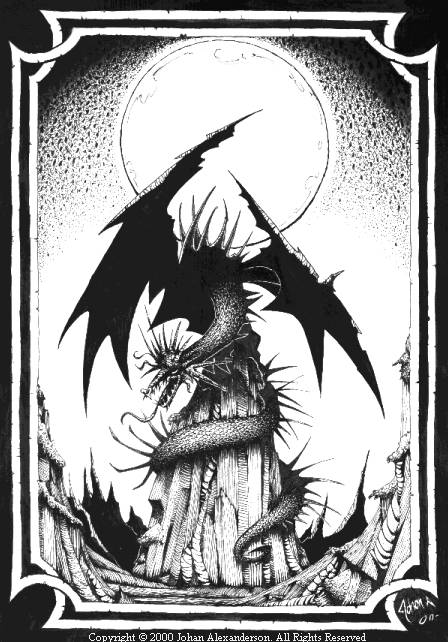

I potenti e leggendari draghi, che incutono timore e dominano i mari, la terra ed il cielo, sono sicuramente al vertice della scala evolutiva della loro razza. Il gradino inferiore è infatti occupato dai Drakes, creature simili ai Draghi ed a costoro imparentate ma notevolmente più piccole di dimensioni, più deboli e meno intelligenti dei loro cugini. Secondo i più famosi studiosi di draghi i Drakes si trovano nel mondo di Arelia dall'alba dei tempi, ben prima che si vedesse volteggiare nei cieli il primo drago. Tutti i drakes sono predatori eccellenti e pericolosi avversari, sono poche le creature che osano sfidarli. Il loro rapporto con i draghi non è buono. I draghi, infatti, li ritengono concorrenti e non esitano, quando li incontrano, ad ucciderli e a cibarsi delle loro carni. Esistono varie specie di Drakes ognuna delle quali è contraddistinta da sue peculiarità:
 |
 |